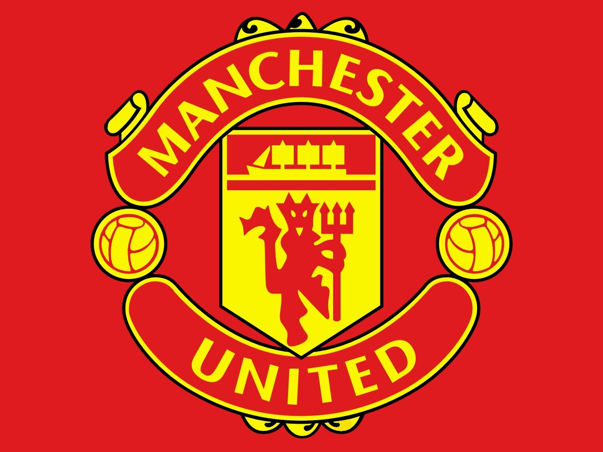
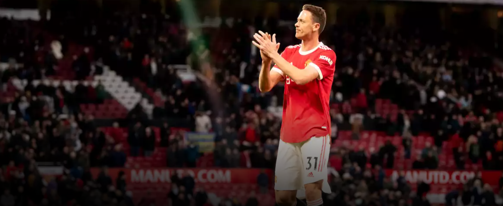
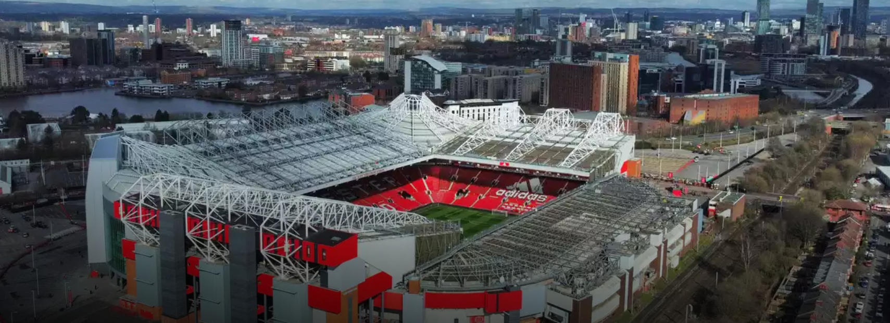
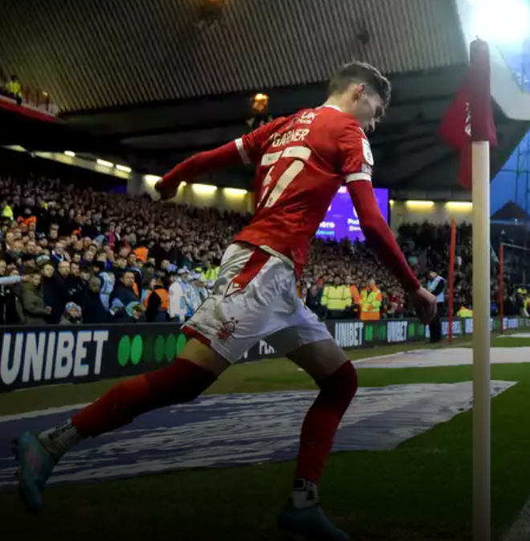
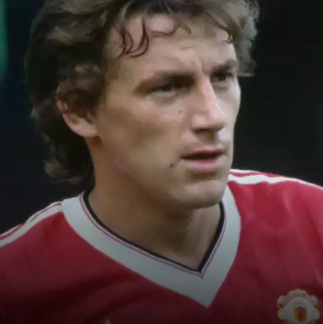
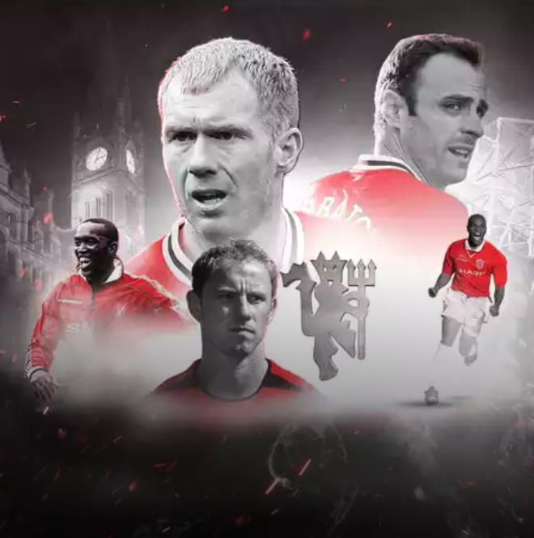
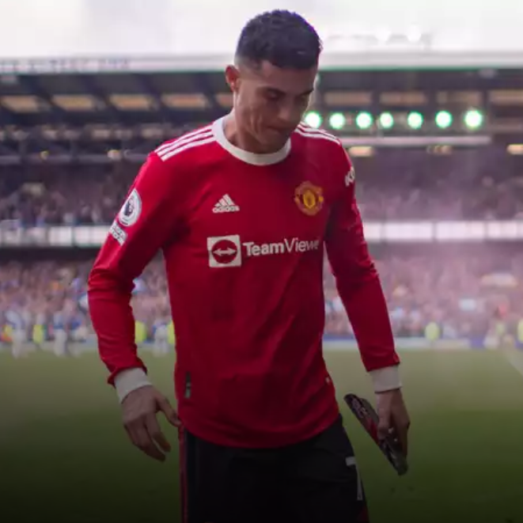

HOME
PLAYER
SIGN IN
Click to find more ~

Matic Will Leave at The End of The Season

A Plan for The Reconstruction of Old Trafford

James Garner

Breaks the Record?

Added Five More!

Ronaldo Apologized！